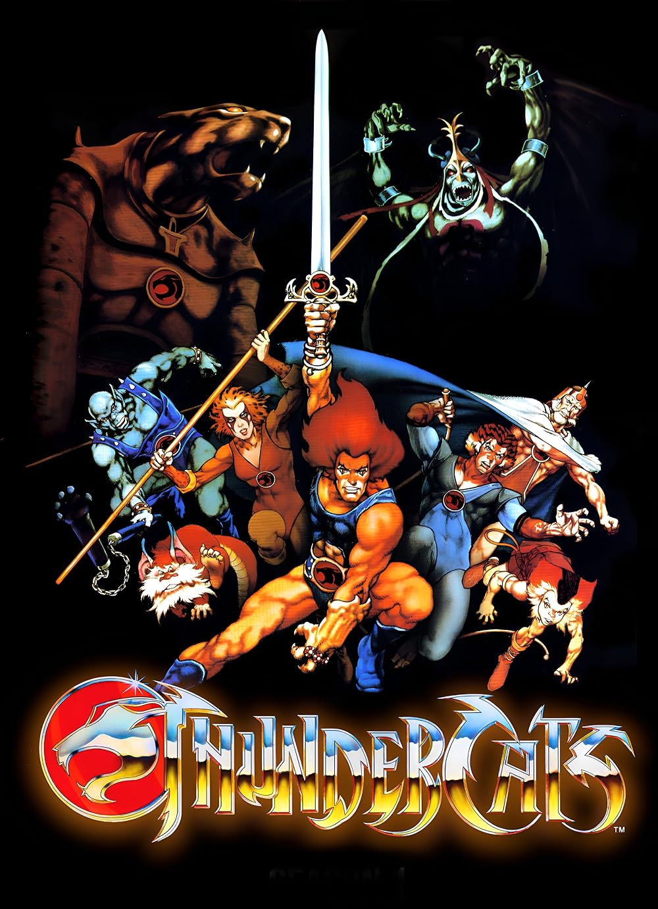
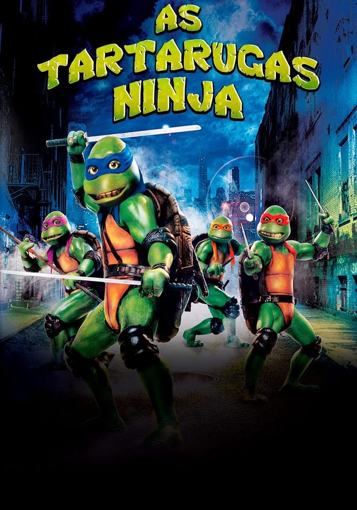
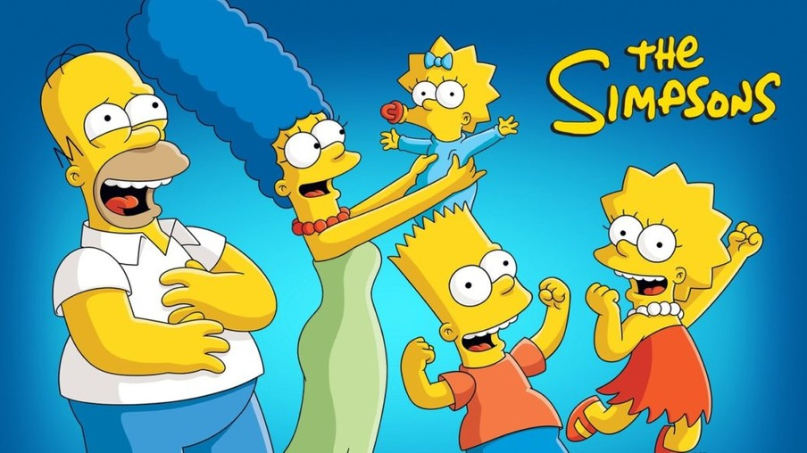
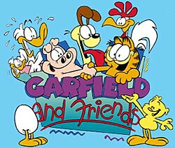

ThunderCats
1985Os felinos guerreiros de Thundera lutam contra as forças do mal lideradas por Mumm-Ra. "Thunder, Thunder, ThunderCats, Ho!"

Caverna do Dragão
1983Seis jovens são transportados para um mundo mágico onde vivem aventuras épicas guiados pelo Mestre dos Magos.

Cavaleiros do Zodíaco
1986Seiya e seus companheiros lutam para proteger a deusa Atena usando armaduras baseadas nas constelações.

Tartarugas Ninja
1987Quatro tartarugas mutantes treinadas em artes marciais protegem Nova York do Destruidor e seus capangas.

Os Simpsons
1989Uma sátira da vida americana através da família Simpsons, moradores da cidade de Springfield, com muito humor ácido e críticas sociais.

Garfield e Seus Amigos
1988O gato laranja preguiçoso que ama lasanha e odeia segundas-feiras vive aventuras com Odie e Jon.